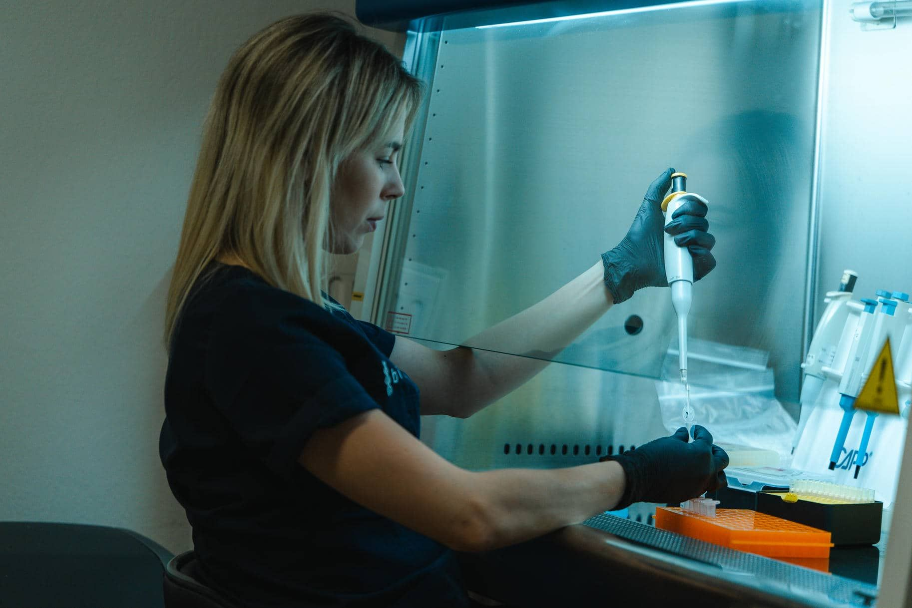
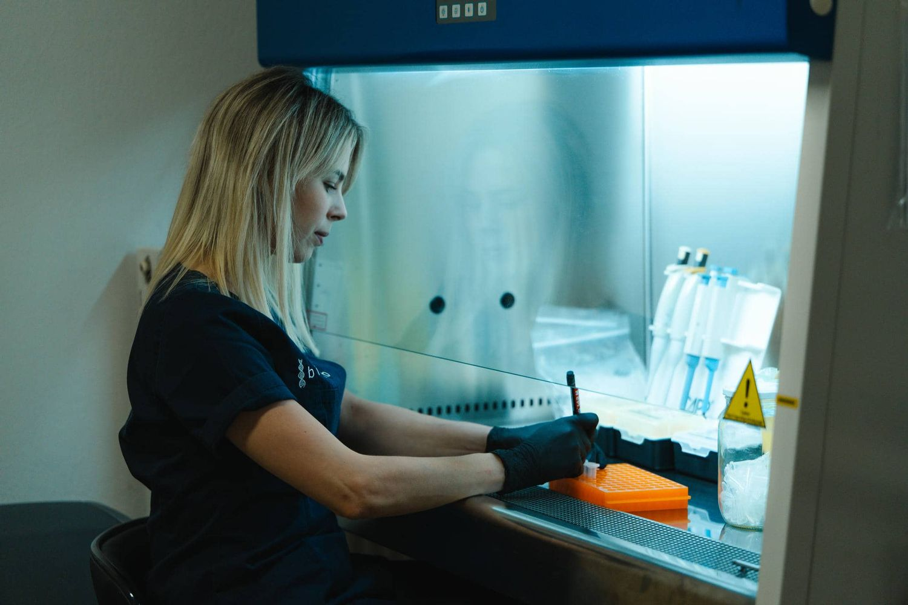
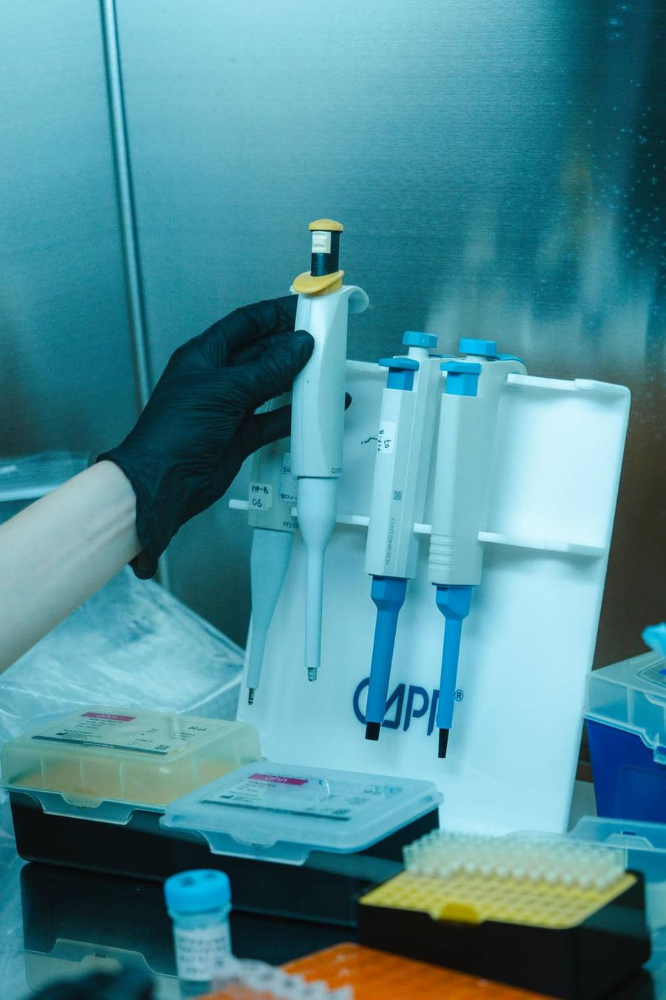
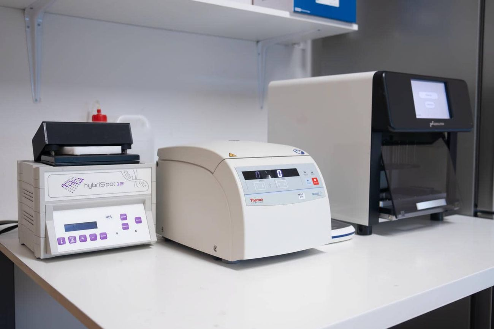
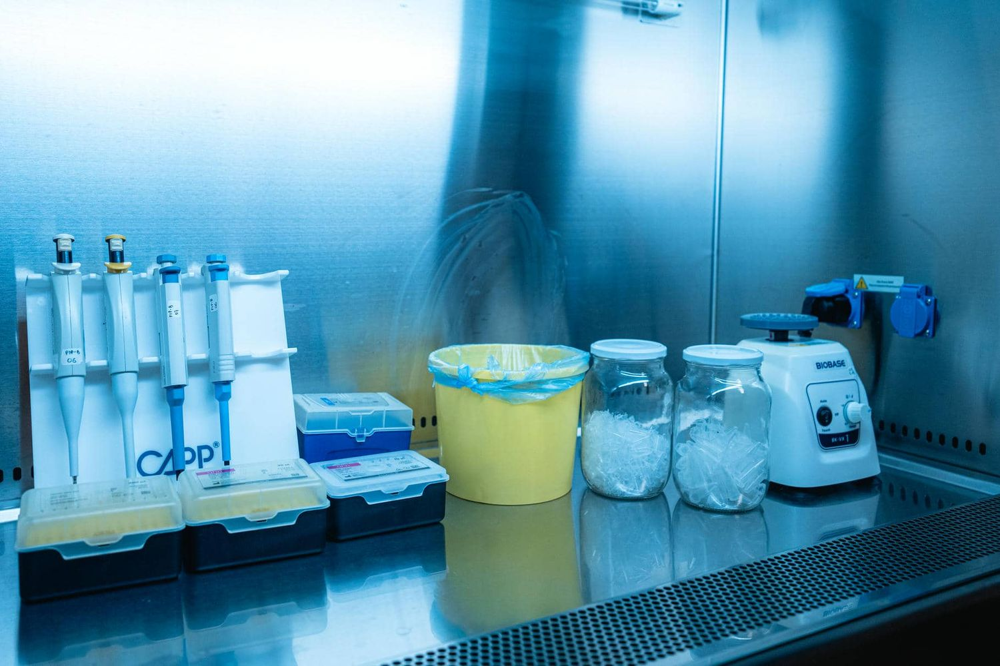

Μαρία Ταουσάνη
Μοριακή Βιολόγος

Μικροβιολογικό & Μοριακό Εργαστήριο · Σέρρες
Στο BIOLAB συνδυάζουμε τη σύγχρονη τεχνολογία μοριακής διαγνωστικής με έμπειρο επιστημονικό προσωπικό, για αξιόπιστα αποτελέσματα που στηρίζουν πραγματικά την απόφαση του ιατρού και του ασθενούς.
Σύστημα διαχείρισης ποιότητας πιστοποιημένο από την EUROCERT.
Αποτελέσματα σε σύντομο χρόνο, με ασφαλή ηλεκτρονική παράδοση.
Αιμοληψία στον χώρο σας, κατόπιν ραντεβού, σε όλο τον νομό Σερρών.
Μοριακοί βιολόγοι και ιατροί βιοπαθολόγοι με πολυετή εμπειρία.
Το εργαστήριο
Το εργαστήριο BIOLAB — Μοριακή Διαγνωστική Ο.Ε. λειτουργεί στις Σέρρες, καλύπτοντας τόσο τις κλασικές μικροβιολογικές αναλύσεις όσο και τον εξειδικευμένο μοριακό και γενετικό έλεγχο.
Προτεραιότητά μας είναι η παροχή έγκυρων και αξιόπιστων αποτελεσμάτων, συνδυάζοντας τις πιο πρόσφατες επιστημονικές και τεχνολογικές εξελίξεις στη διαγνωστική ιατρική με άριστα εκπαιδευμένο προσωπικό και σύγχρονες υποδομές.

Οι εξετάσεις μας
Από τη γενική αίματος έως την αλληλούχιση νέας γενιάς — επιλέξτε την κατηγορία που σας αφορά για να δείτε αναλυτικά τις διαθέσιμες εξετάσεις, τις οδηγίες προετοιμασίας και τον χρόνο απάντησης.
Καλλιέργειες, αντιβιογράμματα, βιοχημικός και ορολογικός έλεγχος με σύγχρονους αναλυτές και αυστηρό ποιοτικό έλεγχο.
Δείτε τις εξετάσεις 02Ανίχνευση κληρονομικών γενετικών νοσημάτων και προσυμπτωματικός έλεγχος με NGS, PCR και μοριακό καρυότυπο.
Δείτε τις εξετάσεις 03Ορμονικός, γενετικός και ανοσολογικός έλεγχος και για τα δύο φύλα, καθώς και διερεύνηση καθ' έξιν αποβολών.
Δείτε τις εξετάσεις 04Σπερμοδιάγραμμα κατά Π.Ο.Υ., καλλιέργεια σπέρματος, κατακερματισμός DNA και γενετικός έλεγχος ανδρικής υπογονιμότητας.
Δείτε τις εξετάσεις 05Κυτταρομετρία ροής, ανοσοφαινοτυπικός έλεγχος και πλήρης έλεγχος αυτοάνοσων και αλλεργικών νοσημάτων.
Δείτε τις εξετάσεις 06Ταυτοποίηση παθογόνων με Real-Time PCR: HPV, σεξουαλικώς μεταδιδόμενα, μικροβίωμα κόλπου, αναπνευστικά και γαστρεντερικά πάνελ.
Δείτε τις εξετάσεις 07NIPT από τη 10η εβδομάδα κύησης με απλή αιμοληψία, χωρίς κίνδυνο για το έμβρυο.
Δείτε τις εξετάσεις 08Έλεγχος κληρονομικού κινδύνου (BRCA και πάνελ), μοριακό προφίλ όγκου και υγρή βιοψία για στοχευμένη θεραπεία.
Δείτε τις εξετάσεις 09Ανάλυση STR με ακρίβεια >99,99%, για προσωπική ενημέρωση ή με τεκμηριωμένη αλυσίδα φύλαξης για δικαστική χρήση.
Δείτε τις εξετάσεις 10Καθοδήγηση πριν και μετά τον γενετικό έλεγχο, για άτομα και οικογένειες με κληρονομικά ζητήματα.
Δείτε τις εξετάσεις —Ο κατάλογός μας είναι ευρύτερος από όσα παρουσιάζονται εδώ. Καλέστε μας στο 23211 21602 και θα σας ενημερώσουμε άμεσα για τη διαθεσιμότητα, την προετοιμασία και τον χρόνο απάντησης.
Επικοινωνήστε μαζί μαςΗ εμπειρία σας
Καλέστε μας ή στείλτε το αίτημά σας. Σας ενημερώνουμε αναλυτικά για την προετοιμασία, το κόστος και τον χρόνο απάντησης της εξέτασης.
Η λήψη γίνεται στο εργαστήριο ή, εφόσον χρειάζεται, στον χώρο σας. Κάθε δείγμα κωδικοποιείται και παρακολουθείται σε όλα τα στάδια της ανάλυσης.
Παραλαμβάνετε την έκθεση από το εργαστήριο ή ηλεκτρονικά, με πλήρη επεξήγηση των ευρημάτων και επικοινωνία με τον θεράποντα ιατρό σας.

Ποιότητα
Το εργαστήριο εφαρμόζει πιστοποιημένο σύστημα διαχείρισης ποιότητας και συμμετέχει ενεργά στις εξελίξεις της μοριακής διάγνωσης μέσα από διεθνείς επιστημονικές κοινότητες.
Ο χώρος μας
Θάλαμοι βιολογικής ασφάλειας, σύγχρονοι αναλυτές και διακριτές ζώνες μοριακής εργασίας — σε έναν χώρο σχεδιασμένο για ακρίβεια και ασφάλεια.






Η ομάδα μας
Μοριακή Βιολόγος

Ιατρός Βιοπαθολόγος

Βοηθός Ιατρικών Εργαστηρίων

Επικοινωνία
Επικοινωνήστε μαζί μας για να προγραμματίσουμε το ραντεβού σας ή για οποιαδήποτε διευκρίνιση σχετικά με μια εξέταση.